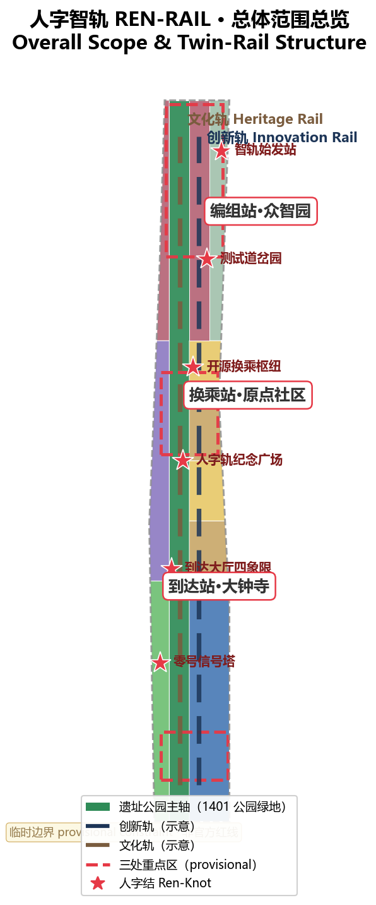
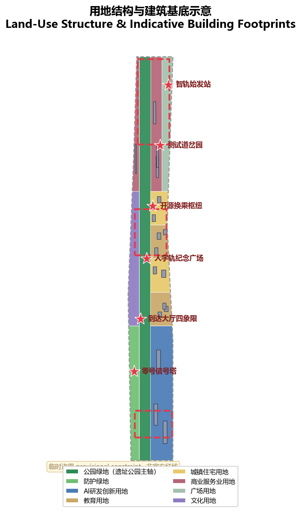
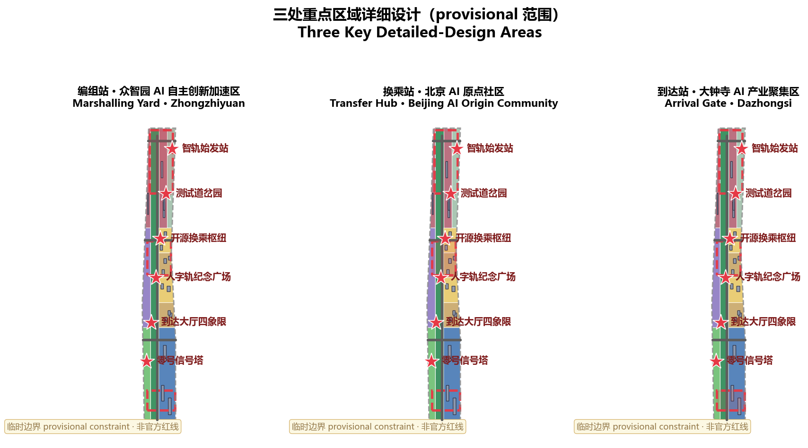
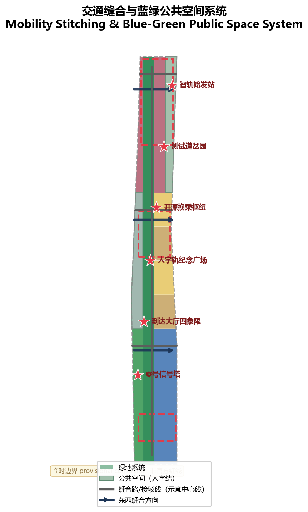
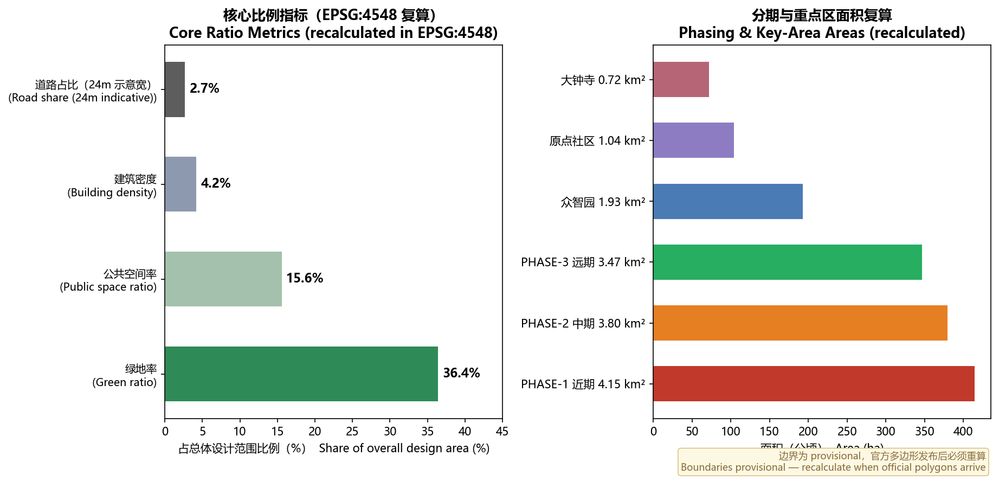

REN-RAIL: Overall Concept and Spatial Structure Proposal for the Centennial Jing-Zhang AI Innovation Belt
Taking Zhan Tianyou's Ren-shaped switchback at Badaling as the symbolic origin, the proposal presents the 'REN-RAIL' concept: twin rails of technology and humanity running in parallel, stitching east-west, connecting north-south, with three stations and two wings. All spatial conclusions are conceptual suggestions based on provisional geometry, reproducible, retractable, and to be recalculated when official boundaries are published.
REN-RAIL: Overall Concept and Spatial Structure Proposal for the Centennial Jing-Zhang AI Innovation Belt
One-sentence proposal: In 1909, Zhan Tianyou used a Ren-shaped ("人") switchback to carry trains over Badaling — the first rail of Chinese self-reliance. Today, this proposal lets that century-old line grow a new pair of Ren-shaped rails — one rail of technology and one rail of humanity, meeting at every "Ren-Knot" — turning the Jing-Zhang heritage park into a global source and pilgrimage site for AI.
Design Basis and Source Inventory
This proposal takes the Prequalification Announcement of the International Open Call for Urban Design of the Centennial Jing-Zhang AI Innovation Belt (the "Announcement") as its primary basis, and the design taskbook, provisional boundaries, key areas, enums, indicators, and source inventory under brief/site-package/ as its machine-readable basis Source Source. Before generation, the AI agent read design_brief.json, allowed_design_space.json, sources.json, enums/, ranges/, schemas/, and data/source_registry.json, and used data/processed/agent_fact_pack.md to build the task, scope, and data-gap checklist Source.
Usage boundaries are as follows Source:
data/source_registry.jsonrecords the permitted use of public, cleared, and provisional materials; this proposal upgrades no background_only or provisional_only material into an official boundary, statutory control, or approval basis.- Official
SITE_BOUNDARYandKEY_AREAexact polygons are not yet published; per the organizers' instructions, this proposal usesbrief/site-package/geometry/provisional_boundaries.geojsonfor the temporary formal package Source Source. geometry/site_boundary.geojson(SITE-001) andgeometry/key_areas.geojson(PROV-KEY-001/002/003) are markedprovisional_constraint,official_boundary=false, and are used only for proposal generation, self-check, visualization, and design discussion — never as an official redline, precise-area basis, or statutory control. When official polygons are published, all layers and metrics must be recalculated Spatial data Spatial data Metric.

Three-Level Scope Framework
The proposal follows the Announcement's three levels: the coordinated research area (43.6 km², bounded by the North Fifth Ring Road, Jingzang Expressway, Xizhimen Outer Street, and Wanquanhe Road) addresses the AI industry ecosystem, strategic positioning, innovation chain, and future city form; the overall design area (about 11.4 km²) addresses the 1–2 km urban and industrial belt around the Jing-Zhang heritage park, forming the urban-renewal framework, industrial spatial layout, transport/municipal support, and urban character; the key detailed design area (368.4 ha) focuses on the three detailed-design districts — Zhongzhiyuan, the Beijing AI Origin Community, and Dazhongsi Depth Standard. Every requirement of Announcement sections 1.3, 1.4, 1.5 and agent tasks agent.1–agent.6 is mapped in compliance_matrix.json to chapters, layers, metrics, drawings, and HTML evidence.
| Level | Design question | Proposed answer | Data anchor |
|---|---|---|---|
| Coordinated research area | How to organize the AI ecosystem and future city form | An innovation chain of "university origins — open-source collaboration — full-stack marshalling — scenario test track — international arrival" | compliance_matrix.json, standard_matrix.json |
| Overall design area | How to draw industry space, renewal, transport/municipal, and character | Ren-shaped twin-rail structure: Heritage Rail (history and public space) + Innovation Rail (industry and scenarios), meeting at six "Ren-Knots" | Spatial data, Spatial data |
| Key detailed design area | How to reach detailed-design depth in three districts | Marshalling Yard (Zhongzhiyuan) — Transfer Hub (Origin Community) — Arrival Gate (Dazhongsi) cluster design | Spatial data, Spatial data, Spatial data |

Coordinated Research Area: Industry and Future-City Research
Overall Concept, Master Name, and Naming System (agent.1)
The overall concept is REN-RAIL (人字智轨). In 1909 Zhan Tianyou created the Ren-shaped switchback at Badaling, pulling trains up with two locomotives, one pushing and one pulling — a landmark of Chinese self-designed, self-built trunk railways. The proposal translates the "Ren" character into two spatial meanings: first, the two strokes are twin parallel rails — one rail of technology and one of humanity, so AI innovation and urban life, global developers and local residents never derail; second, the two strokes meet at one point — the spatial move of "stitching east-west and connecting north-south" across the heritage park, and every meeting point becomes a "Ren-Knot" public space Source Standard. The concept continues real historical facts; the naming system and Logo direction all follow this symbol, without copying existing city, park, or enterprise names, and without concluding floor area ratios, building heights, demolition/renovation, or engineering implementation.
| Level | Name | Description |
|---|---|---|
| Belt official name | Centennial Jing-Zhang AI Innovation Belt | Established by the Announcement; the statutory object of work |
| Brand concept name | REN-RAIL (人字智轨) | A global development initiative and spatial narrative brand |
| Three positioning belts | Heritage Rail / Life Rail / Innovation Rail | Correspond to the Announcement's "heritage belt, urban AI life-experience belt, AI-integrated innovation belt" |
| Five function signals | Autonomy Rail, Ecosystem Rail, Scenario Rail, Vitality Rail, Governance Rail | Correspond to the five functions: full-stack self-reliant innovation system, world-class AI innovation ecosystem, AI+ scenario empowerment paradigm, intelligent vibrant AI city, global AI-governance voice |
| Three areas | Marshalling Yard (Zhongzhiyuan) / Transfer Hub (Origin Community) / Arrival Gate (Dazhongsi) | Functional division of districts under the railway metaphor |
| Two wings | Signal House (Zhongguancun Technology Service Wing) / Test Track (Xiaoyuehe Scenario Empowerment Wing) | Supporting systems for factor allocation and real-environment testing |
Logo and visual identity direction: the core graphic is the Ren-shaped twin-rail junction symbol — two rails of different material meet at one point and open upward, signifying convergence, transfer, and ascent; the suggested dual-color system uses Jing-Zhang cast-iron black + Jing-Zhang red (heritage rail) and AI cyan-blue (technology rail); the Chinese wordmark "人字智轨" and the English wordmark "REN-RAIL" are used together; the derived symbol family — station-name steles, signal lights, timetable cards, point-arrow markers, and Ren-Knot badges — supports wayfinding and cultural products Depth.
Three-areas-two-wings synergy loop: the Marshalling Yard (Zhongzhiyuan) performs the "final assembly" of full-stack self-reliant innovation and standards governance; the Transfer Hub (Origin Community) performs the "transfer" of university talent, open-source outcomes, and capital; the Arrival Gate (Dazhongsi) performs "arrival and departure" for smart-native new businesses and global visitors; the Signal House (Zhongguancun wing) provides global factor allocation, Zhongguancun IP, and capital enablement; the Test Track (Xiaoyuehe wing) provides real-environment testing and scenario opening — forming the closed loop "marshalling → test track → arrival → feedback to marshalling" (the three-areas-two-wings synergy loop required by agent.1).
World-Class AI Innovation Ecosystem: 5–8 Global Cases and Ecosystem Map (agent.2)
The core task of the coordinated research area is to build a world-class AI innovation ecosystem. The proposal studies the following global cases, extracts transferable mechanisms, and anchors them in Haidian space:
| Case | Transferable mechanism | Translation into Haidian space |
|---|---|---|
| Silicon Valley–Stanford Research Park corridor, USA | University patent–industry–VC corridor; frontier papers and talent spillover | Near-campus incubation and commercialization street in the Origin Community |
| Kendall Square, Boston, USA | Life-science and AI clustering; stitching across rail/highway; TOD | Four-quadrant pedestrian connection at Dazhongsi station; multi-station integration |
| King's Cross Knowledge Quarter, London, UK | Railway industrial heritage renewed into innovation and culture district | Activating the Jing-Zhang heritage park spine; Heritage Rail |
| one-north, Singapore | Government–capital–talent synergy; whole-lifecycle talent services | Talent special zone; international talent service nodes |
| Tel Aviv startup corridor, Israel | Community-based accelerator network; 24-hour urban vitality | Night-vitality scenarios; community innovation nodes |
| Yuehai Street, Shenzhen, China | Leading-firm–supply-chain–hardware ecosystem loop | Smart-terminal and agent new businesses in Dazhongsi |
| West City Science and Innovation Corridor, Hangzhou, China | Platform-enterprise scenario opening; industrial digital ecology | Scenario-opening mechanism; AI+ life showcases |
| Zhongguancun's own 40-year evolution | Zhongguancun experience in open source, standards, governance voice | Governance Rail; global AI-governance dialogue platform |
AI ecosystem map (eight-factor mechanism): the ecosystem is organized around eight factors — land, space, industry, capital, talent, compute, data, and scenario — mapped to the full-stack innovation chain (foundation—framework—model—application—governance): Zhongzhiyuan hosts the foundation and model layers (compute, evaluation, standards); the Origin Community hosts the framework layer and open-source ecology (talent, outcomes, capital); Dazhongsi hosts the application layer and smart terminals (scenario, data, content); the two wings provide capital, data elements, and real scenarios. These mechanisms are conceptual suggestions only and constitute no investment, recruitment, or fiscal commitment Source Depth.
Future-City Form Research
Future-city research asks how AI changes work, life, socializing, learning, transport, and public services. The proposal makes three judgments translated into space: first, AI shifts from "tool" to "public environment" — perceivable, verifiable, and switchable AI public-service scenarios along the heritage park; second, innovation happens within walking distance — 15-minute innovation-life circles organized around Ren-Knots; third, governance becomes a visible public good — signal-light-style governance displays enter public space. All judgments are expressed as locatable function zones, nodes, corridors, and scenarios — no vague technology visions, and no operational visions presented as approved conditions Depth Standard.
Overall Design Area: Urban Renewal and Regulatory-Plan-Depth Urban Design
Ren-Shaped Twin-Rail Spatial Structure
The spatial structure of the overall design area is "one belt, twin rails, six knots, four transversals":
- One belt: the Jing-Zhang heritage park spine (Heritage Rail) — the 1401 park-green longitudinal zone in
land_use.geojson, linking the historical sequence from Qinghuayuan station to Dazhongsi Spatial data; - Twin rails: the Innovation Rail west of the spine — a mixed industrial and living belt of R&D, education, residential, and commercial land Spatial data;
- Six knots: six "Ren-Knot" public-space nodes along the spine (see key-area and public-space chapters), expressed by
public_space.geojsonSpatial data; - Four transversals: four east-west stitching roads (indicative centerlines in
roads.geojson) reconnecting the city halves severed by the railway Spatial data.
This structure implements the "stitch east-west, connect north-south" strategy: structural slow-mobility connections cover the three key areas and the universities, communities, and transit stations along the corridor, organizing the Announcement's requirements on station integration, road micro-circulation, slow-mobility gaps, and external transport into one auditable chain Depth Depth.
Land Use, Building Scale, and Retain-Renovate-Demolish Strategy
geometry/land_use.geojson partitions the submitted boundary by grid topology: complete coverage, seamless, non-overlapping (union minus boundary ≈ 1.6e-06, i.e., floating-point precision), classified with the registered codes of enums/land_use_codes.json rather than invented categories: 1401 park green (heritage park spine), 0802 AI R&D (Zhongzhiyuan), 0804 education and 0701 residential (Origin Community), 05 commercial services and 1403 plaza (Dazhongsi), 1402 protective green and 0803 cultural (along the two wings) Standard Spatial data Metric.
geometry/buildings.geojson expresses conceptual building footprints (17 indicative footprints in four types: R&D office, residential, commercial office, education/research), explicitly marked "to be confirmed": since existing buildings, ownership, regulatory plans, and engineering conditions are not provided in the site package, this proposal draws no demolition/renovation conclusion; it only proposes a classification method (retain heritage and protected objects, renovate low-efficiency space, renew parcels pending development, and new-build only as conceptual indication), listed as a prerequisite for formal deepening Depth Metric. Total floor area, FAR, building height, density, and setbacks lack official approved conditions and are uniformly treated as status=unknown, to be recalculated when official regulatory-plan data arrives Spatial data Metric.
Key Detailed Design Areas
The three key areas are designed as a "railway three-station" cluster at conceptual planning-comprehensive-implementation depth, each referencing its key-area layer instead of repeating slogans like "build a demonstration zone" Depth Spatial data.
Marshalling Yard · Zhongzhiyuan AI Self-Reliance Acceleration Area (approx. 192.1 ha)
Design positioning: a garden-style full-stack self-reliance marshalling yard — organizing the "marshalling" of the AI industry chain (model R&D, compute scheduling, evaluation and certification, standard setting) into visitable, participatory public-space scenarios. Spatial moves: organize the 0802 R&D land clusters along the Qinghe riverfront and the western Innovation Rail, strengthening north-south connection; a low-carbon innovation corridor along the Qinghe; a "Marshalling Yard · Compute Test Base" (validation scenario) and an "AI Check-up Depot" in the middle of the district. AI industry and operation scenarios: self-reliant model testing, standard-setting workshops, safety-governance displays, low-carbon compute experiences Depth Spatial data.
Transfer Hub · Beijing AI Origin Community (approx. 104.3 ha)
Design positioning: a near-campus open-source transfer hub — letting university talent, open-source outcomes, and capital "transfer" within walking distance. Spatial moves: densify campus–park–block slow-mobility stitching between 0804 education and 0701 residential land; place an "Open Yard Workshop" and a "Timetable Kiosk"; complete outcome-release, talent-service, and residential amenities. AI industry and operation scenarios: open-source community, outcome release, talent-zone services, near-campus incubation Source Spatial data.
Arrival Gate · Dazhongsi AI Industry Cluster (approx. 72.0 ha)
Design positioning: an urban smart-economy and international-exchanges arrival hall. Spatial moves: four-quadrant pedestrian connection around Dazhongsi station integration ("Arrival Hall · Four-Quadrant Stitch"), with 05 commercial land and 1403 plaza land carrying smart-native consumption and business scenarios; a "Launch Platform" and a "Ticket Hall for Data". AI industry and operation scenarios: agent and smart-terminal display, content consumption, data elements, and international roadshows Metric Spatial data.

AI Innovation Ecosystem, Talent Profiles, and AI+ Scenarios
User Personas (5 types)
| Persona | Typical needs | Spatial response | Self-check boundary |
|---|---|---|---|
| Global open-source developer | Contribution, collaboration, testing, honor, pilgrimage | Open-source launch hall in Origin Community, honor wall at Ren-Rail Memorial Plaza, night collaboration space | No individual behavior tracking; community contribution data aggregated only |
| University faculty, students, researchers | Outcome transfer, cross-campus collaboration, daily walking | Campus–park stitching, commercialization street, AI education experience points | Campus and research data require authorization |
| Startup teams and serial founders | Low-cost office, compute access, product test field | Shared test fields in Zhongzhiyuan, edge-compute stations, standards-governance consulting | Compute and data services require separate authorization |
| Executives and global visitors | Showcase, business, international reception, recruiting | International roadshow hall in Dazhongsi, four-quadrant arrival hall, public space around leading firms | Corporate logos and cases require rights clearance |
| Local residents and families | Commuting, leisure, community services, low-disruption renewal | Heritage-park slow-mobility loop, community AI shelters, accessible gates | No commercial profiling of residents; no data on minors |
AI Scenario Cards (12 cards, ≥10 required)
| Scenario card | Spatial carrier | Design description | Data/governance boundary |
|---|---|---|---|
| 01 Community AI Shelter | Residential nodes | Community-level AI service queries and emergency calls in a bus-shelter form | Anonymized; human fallback |
| 02 Points / Scenario Switch | Dazhongsi plaza | Multi-scenario demonstration in one space; the public decides the "points" direction | Scenario loading must be traceable |
| 03 Signal / Governance Display | Ren-Knot nodes | Shows each AI service's purpose, data owner, running status, and kill switch | Publicly verifiable (Governance Rail) |
| 04 Agent Carriage · Mobile Lab | Xiaoyuehe test track | Low-speed autonomous driving/delivery observation line (validation scenario 1) | Closed section; manual takeover positions |
| 05 Timetable Kiosk | Origin Community | AI service timetable and manual-review registration (time-check regime) | Late records public |
| 06 Launch Platform | Dazhongsi arrival hall | Outcome release, roadshows, media briefings for firms and teams | Content review and rights clearance |
| 07 Marshalling Yard · Compute Test Base | Zhongzhiyuan | Model training, evaluation, red-team testing display (validation scenario 2) | Evaluation data desensitized |
| 08 Open Yard Workshop | Origin Community | Developer collaboration, hackathons, code-review islands | Open-source license compliance |
| 09 AI Check-up Depot | Zhongzhiyuan | AI compliance checkups and safety evaluation for firms and citizens (validation scenario 3) | Evaluation conclusions human-reviewed |
| 10 Ticket Hall for Data | Dazhongsi | Compliant data-element circulation and digital-asset service interface | Authorization and audit trails |
| 11 Accessible Gate | Heritage park / communities | AI accessibility and aging-friendly service pilot | No identity data of special groups |
| 12 City AI Cockpit | Signal Zero Tower | Public observation of city AI operations; listenable, stoppable | Governance transparency; human final decision |
All scenarios follow the principles of data minimization, open sources, explainability, and human review: AI may assist in identifying slow-mobility gaps, public-space heat, facility maintenance, and service demand, but it cannot replace planning approval, output unauthorized personal profiles, or claim official implementation commitments Source Depth. Scenario–space–operation mapping and privacy boundaries are detailed in the visual page's task-coverage section.

Transport, Rail, Municipal Facilities, and Public Services
Transport: a "four transversals + one longitudinal" indicative skeleton expresses station access and stitching — four east-west stitching roads connect the city halves across the heritage park, and one longitudinal access line links the three station districts and rail stations along the corridor; road centerlines are conceptual only and do not represent road redlines Spatial data Metric. The slow-mobility system is built on the park-spine trail and priority crossings along the stitching roads, covering Wudaokou, Qinghua East Road West, Dazhongsi station, and the park's ring-road crossings; detailed gap-stitching plans await official redlines and traffic organization Depth.
Municipal and new infrastructure: the proposal suggests siting principles for three new-infrastructure prototypes — edge-compute stations, distributed energy, and AI public-service facilities (see scenario cards 01/07/12). Pipeline, energy, drainage, flood-control, and fire-engineering conditions are missing and are all listed as prerequisites for formal deepening Depth Spatial data.
Blue-Green Space, Public Space, and Urban Character
Blue-Green System
The blue-green system takes the heritage-park spine as its skeleton: the 1401 park green forms the north-south Heritage Rail (approx. 323.7 ha); 1402 protective green lines the western edge; the Qinghe (north) and Xiaoyuehe (south) frontages reserve waterfront trails and ecological corridors; green ratio ≈ 36.4% and public-space ratio ≈ 15.6%, both recalculated from the submitted geometry in EPSG:4548 Metric Metric Spatial data.
Ren-Knot Public-Space System
Six "Ren-Knots" along the spine are the meeting points of the technology and humanity rails: the north-end Origin Yard, the Zhongzhiyuan Test Points Garden, the Origin Community Open-Source Transfer Hub, the Ren-Rail Memorial Plaza, the Dazhongsi Arrival Hall quadrants, and the southern Signal Zero Tower. Each Ren-Knot is configured with a component library around four elements — display, experience, governance, operation: display screens, experience installations, governance signal lights, and operation kiosks, serving as a replicable, combinable public-space component library prototype Depth Spatial data.
AI Pilgrimage Landmarks (3)
1. Ren-Rail Memorial Plaza: a 1:1 artistic recreation of the Badaling Ren-shaped switchback, with the "Agent Contribution Honor Wall" and "Global Developer Honor Wall" at the rail junction — selected proposals and contributors are inscribed in stone, the spatial seat of the permanent commemoration system set by the Announcement; 2. Signal Zero Tower: making "who is dispatching AI" a visible public matter — real-time display of AI service status, listenable and stoppable; the signature landmark of the Governance Rail; 3. Open Source Gallery: a marshalling-museum-like space carrying open-source outcome displays, the AI milestone corridor, and the annual inscription ceremony Source Depth.
Landmark design avoids over-entertainment and internet-viral styling; all spatial conclusions are conceptual and can be deepened by professional teams Standard.
Urban Character and Cultural Narrative (agent.5)
The cultural narrative follows "three accelerations of self-reliance": 1909 building the rail (the Ren-shaped line leading the nation toward self-reliance) → 1990s–2010s building chips and software (Zhongguancun building industry on self-reliance) → today building intelligence (AI, making Haidian a global source and pilgrimage site for AI). The core sentence: "The Ren never changes: measure by people, run on twin rails."
Wayfinding and symbol-system direction: unify belt-wide signage in railway vocabulary — station-name steles (district entrances), signal lights (AI service governance marks), timetable cards (events and services), point arrows (route guidance); the cultural symbol system and the belt Logo system are managed in separate layers, never mixed Source. International communication narrative: "China's first rail of self-reliance becomes the world's rail of intelligence"; brand tagline: REN-RAIL: where AI meets people. Historical resources such as Qinghuayuan station are retained as Heritage Rail nodes; specific heritage-protection and character controls await official conditions Depth.
Renewal Project List, Implementation Policy, and Phasing
| No. | Project | Type | Key dependencies | Evidence |
|---|---|---|---|---|
| JZ-01 | Heritage-park spine slow-mobility connection and Ren-Knots | Public space / slow traffic | Road redlines, under-bridge space, heritage conditions | Spatial data |
| JZ-02 | Ren-Rail Memorial Plaza and developer honor wall | Landmark / culture | Park land, inscription engineering, rights clearance | Spatial data |
| JZ-03 | Signal Zero Tower and city AI operations center | New infrastructure / governance | Energy, compute, operator | Spatial data |
| JZ-04 | Open Source Gallery (marshalling museum) | Culture / industry display | Ownership, ground-floor uses, operator | Spatial data |
| JZ-05 | Zhongzhiyuan marshalling-yard renewal and Qinghe innovation frontage | Urban renewal / industry | Qinghe blue line, flood control, regulatory conditions | Spatial data |
| JZ-06 | Origin Community open-source transfer hub and commercialization street | Urban renewal / industry services | Campus boundaries, ownership, ground-floor uses | Spatial data |
| JZ-07 | Dazhongsi arrival-hall four-quadrant pedestrian connection | Station integration / slow traffic | Station, intersection, utilities | Spatial data |
| JZ-08 | Xiaoyuehe test track and JZ AI Festival venue | Operation / events | Public-space permits, event safety, rights | Spatial data |
Phasing (geometry/phasing.geojson, recalculated phase areas ≈ 4.149M, 3.798M, 3.466M m²): PHASE-1 near term (2026–2028): spine slow-mobility connection, Ren-Knots, and the Ren-Rail Memorial Plaza first, with light operations such as the JZ AI Festival launched in parallel; PHASE-2 mid term (2028–2031): renewal of the three station districts, validation scenarios, and scenario-opening operations; PHASE-3 long term (2031–2035): full-belt AI ecosystem, Governance Rail, and international operations loop. Implementation-policy suggestions cover renewal coordination, space supply, operation mechanisms, industry services, public participation, data governance, and property-rights coordination; unconfirmed ownership, funding, implementation entities, and approval paths are listed as implementation risks, not commitments Depth Depth.
Global AI Event System and Long-Term Operation (agent.6)
- Annual flagship: the JZ AI Festival (京张国际人工智能节) — a global developer pilgrimage season, with a global AI roadshow competition, an outcome-release week, and the open-source contribution inscription ceremony (the year's most outstanding contributions engraved);
- Quarterly: Ren-Rail Developer Day — open-source collaboration workshops and code-review islands;
- Monthly: "Time Check Day" (public compliance time-check of AI services) and "Open Track Day" (open testing on the test track);
- Brand and community: the REN-RAIL brand IP system (badges, commemorative tickets, digital collectibles); the developer community forms a conversion loop of "contribution → credits → compute vouchers/roadshow seats/honor-wall inscriptions"; international attraction via overseas roadshows, event partnerships, and youth talent programs;
- All of the above are conceptual suggestions and proposed mechanisms, constituting no confirmed government events, investment commitments, or fiscal arrangements Source Standard.
Indicator System, Area Recalculation, and Compliance Matrix
Indicators are managed in three classes: spatial indicators (recomputable directly from the submitted geometry): boundary area ≈ 1,141.3 ha, green ratio 36.4%, public-space ratio 15.6%, building footprint ≈ 48.0 ha, road centerlines ≈ 12.7 km, three phase areas, key-area count 3 Metric Metric; control indicators (pending official conditions): FAR, building height, density, setbacks, and road redlines managed as status=unknown, recalculated when official regulatory-plan data arrives Metric; performance indicators (to be calibrated in operation): AI innovation index, talent density, scenario usage frequency, event participation — tracked in the compliance matrix. Complete formulas, source files, and confidence are in metrics.json Depth Spatial data.
The compliance matrix has 23 entries: all Announcement tasks 1.3/1.4/1.5 and the six agent tasks agent.1–agent.6 are mapped entry by entry to chapters, layers, metrics, drawings, and HTML pages; no mandatory task is uncovered Depth. The evidence-chain and metric-recalculation figures follow:

Risk, Copyright, and Compliance Statement
- Bilingual: this package uses Chinese as the primary file;
proposal.mdis the primary-language counterpart of this translation; A3/A0 drawings, offline HTML, and all text-bearing figures are provided bilingually, followingdocs/terminology-glossary.mdwhere applicable. - Boundary risk: all spatial conclusions are based on provisional geometry; when official boundaries and key-area polygons are published, full recalculation is mandatory; precision-sensitive metrics (areas, ratios, lengths) must not be used for any official purpose beyond scoring Source.
- Data and copyright: all sources, licenses, and authorization statuses are registered in
sources.jsonandreport/copyright_statement.md; global cases are referenced for mechanisms only, without unauthorized images, trademarks, or portraits; the HTML is a purely offline static page loading no remote resources. - Legal boundary: this proposal is an open co-creation suggestion generated by an AI agent; it does not replace formal planning and constitutes no government-approved conclusion; all spatial suggestions are worded as "conceptual suggestions," "reference schemes," or "material for professional teams to deepen" Source Depth.
References
- brief/public-brief.md, brief/site-package/design_brief.json, brief/site-package/agent_taskbook.json
- brief/site-package/allowed_design_space.json, brief/site-package/enums/, brief/site-package/ranges/planning_limits.json
- brief/site-package/geometry/provisional_boundaries.geojson
- data/processed/agent_fact_pack.md, data/source_registry.json
- Complete machine index:
sources.jsonSource,metrics.jsonMetric,compliance_matrix.json,standard_matrix.json,design_depth_matrix.jsonSource